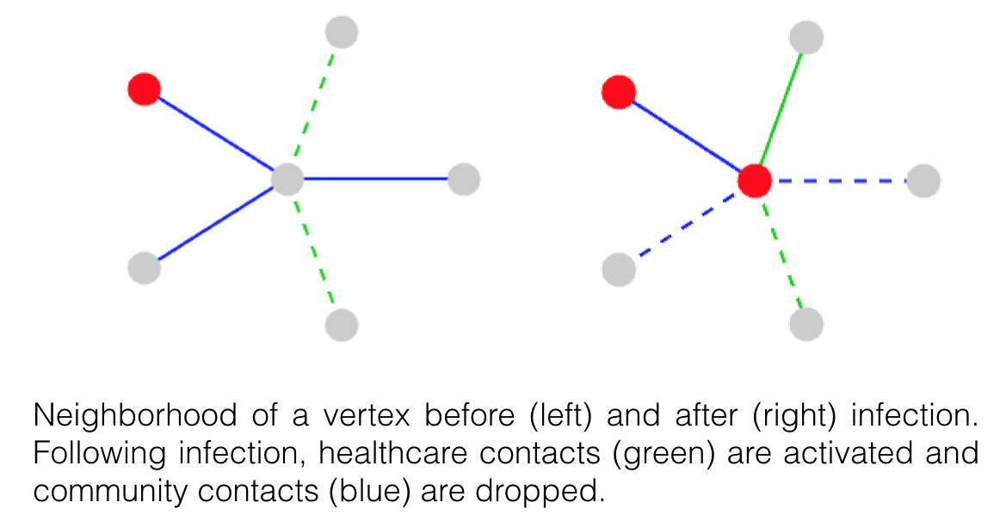
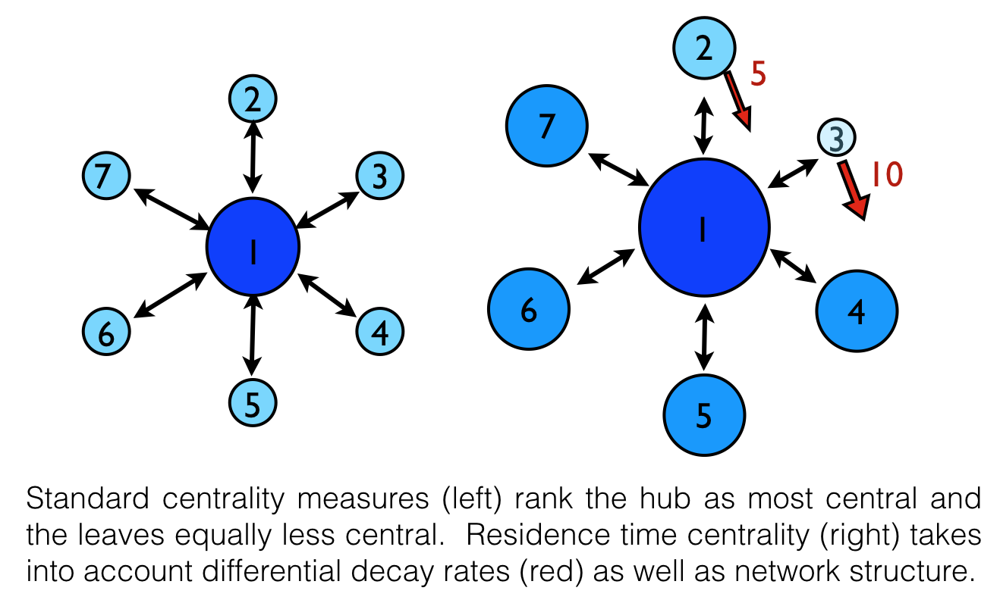
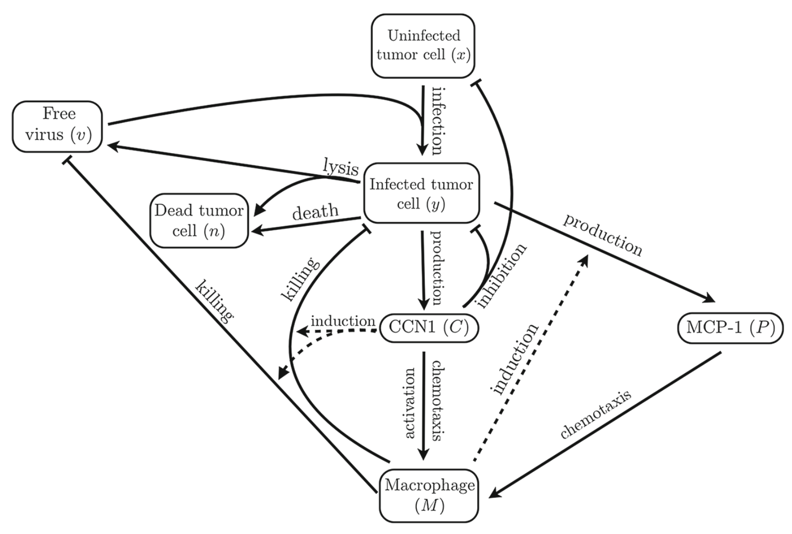

Research
I formulate and analyze mathematical models of biological processes in order to understand behavior, reveal correlations and predict success of interventions. In doing so, I also pursue questions of mathematical interest in areas such as applied dynamical systems, differential equations, stochastic processes, linear algebra, graph theory and statistics. My primary interest is the study of infectious diseases on networks.
Dynamic Networks

The homogeneous mixing assumption upon which many
epidemiological models are based fails to account for population-level
heterogeneities, such as host- and space-dependent transmissibility and
connectivity, which can critically impact disease spread. We consider a stochastic SIR-type epidemic on a contact network with a
specified degree distribution. We determine a sufficient condition
on the degree distribution under which a well-known pair approximation model
gives the exact large graph limit of the stochastic process. Based
on this result, we formulate a hybrid stochastic-deterministic model
which allows for Bayesian parameter estimation while remaining
computationally inexpensive. We extend this framework to dynamic
multi-layer graphs where layers correspond to different interaction
types. A key aspect of the work is that contact patterns changes in
response to infection.
Ebola
Our primary application is Ebola
for which we consider a two-layer graph with contact types corresponding to regular community
contacts and healthcare contacts, features relevant
for Ebola given the disproportionate Ebola risk experienced by
healthcare workers and caregivers in the recent West Africa outbreak. We are working in collaboration
with the Kinshasa School of Public Health and the Ministry of Health
in the Democratic Republic of the Congo. Ongoing work includes formal proofs of a law
of large numbers and central limit theorem, analysis of the limiting
ODE system, parameter identifiability, and fitting to Ebola data. In addition, we plan to investigate control methods (e.g. vaccination, distribution of personal protective equipment) in which our multitype dynamic graph framework may reveal interesting tradeoffs in terms of optimal strategies.
A new distance for graphs with absorption

Standard distance measures between nodes on a graph, such as shortest path or commute
time, only consider network structure. We develop a metric on what we call "graphs with absorption"
that takes into account both network structure and a local node characteristic, i.e. absorption.
This is motivated by the study of infectious disease on networks where absorption represents
pathogen decay, viral clearance, etc. The directed metric we define is based on a
generalized inverse of the graph Laplacian matrix, first introduced by Tien et al. (2015).
We futher define a node centrality measure and develop a community
detection algorithm that account for local absorption rates as well as graph structure.
Stochastic simulations of SIR-type disease on multi-patch community networks indicate that
our new distance and centrality metrics inform features of epidemics such as outbreak size and time until infection.
Oncolytic Virotherapy
 Oncolytic viruses (OV) selectively target and kill cancer cells and hold much promise as therapuetic agents that can amplify themselves in vivo. Yet challenges in drug development remain and therefore, mathematical modeling may provide valuable insight. We have developed a model for treatment with a fusogenic OV which is capable of spreading via cell-to-cell fusion within the tumor. The model is formulated as a nonlinear hyperbolic-parabolic partial differential equations system with a moving boundary. Main results include proof of existence and uniqueness of solutions and numerical investigation of the effects of viral burst size and cell fusion rate on long-term tumor volume. Using a similar modeling framework, we have also investigated the upregulation of the matricellular protein CCN1 in virotherapy of glioma. Overexpression of CCN1 has been shown experimentally to induce an antiviral immune response including the proinflammatory activation of macrophages. Model results suggest that macrophage content is a critical factor to the success of OV therapy and to the reduction in tumor volume gained with coadministration of a CCN1 antibody.
Cholera in Bangladesh
 Cholera remains a serious public health burden in the developing
world with global burden estimated to be 2.8 million cholera cases
per year. Vibrio cholerae, the causative agent of cholera, is an
aquatic bacterium which is capable of living indefinitely in
environmental water bodies outside of human hosts. Transmission is
predominantly fecal-oral through contaminated water
indicating that
local surface water
and sanitary
conditions are
paramount to the
spread of the
disease. We combine
hydrological
modeling of surface
waters, dynamic
network disease
models and epidemiological data to investigate the seasonality of
cholera outbreaks in Bangladesh. We aim to determine the
hydrological and climatic drivers behind annual patterns of cholera
in Bangladesh and the large interannual variability in disease
severity in order to establish the most effective measures for the
prediction and mitigation of outbreaks.
Cholera remains a serious public health burden in the developing
world with global burden estimated to be 2.8 million cholera cases
per year. Vibrio cholerae, the causative agent of cholera, is an
aquatic bacterium which is capable of living indefinitely in
environmental water bodies outside of human hosts. Transmission is
predominantly fecal-oral through contaminated water
indicating that
local surface water
and sanitary
conditions are
paramount to the
spread of the
disease. We combine
hydrological
modeling of surface
waters, dynamic
network disease
models and epidemiological data to investigate the seasonality of
cholera outbreaks in Bangladesh. We aim to determine the
hydrological and climatic drivers behind annual patterns of cholera
in Bangladesh and the large interannual variability in disease
severity in order to establish the most effective measures for the
prediction and mitigation of outbreaks.